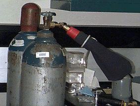

Dry Ice Maker Rupture
The following safety alert is intended to make lab workers aware of an accident that occurred while using a device to produce dry ice in flake or snow form, pictured below. A UK researcher was injured when using a carbon dioxide cylinder with a device called a Frigimat Jr. (Bel-Air Products, Product No. F38886-0000) to form flaked dry ice. This device includes a brass nozzle with a polypropylene cone, clamp, and cloth bag. It screws directly into cylinder of liquid carbon dioxide. The bag is then secured on the cone with the clamp. Manufacturer's instructions call for the cylinder valve to be opened about 3/4 turn and the compressed liquid carbon dioxide expands into the bag. On this occasion the researcher opened the valve of they cylinder approximately 3 or 4 turns and a mixture of solid and gas forms of carbon dioxide were released at high pressure into the researcher's face. The cylinder valve popped and the cone of the dry ice appliance was cracked. His prescriptive safety glasses were knocked off his face due to the extreme impact. The researcher was taken to the emergency room where he was treated for traumatic injury, corneal abrasion, and cold burn. |
 |